Profil Singkat & Komitmen
Berpengalaman dalam perencanaan program sosial, pencacahan dan survei statistik lapangan bersama Badan Pusat Statistik (BPS), serta pengorganisasian kegiatan di sektor pendidikan, kesehatan, dan sosial. Menguasai penyelesaian masalah, manajemen proyek, komunikasi strategis, serta analisis pengolahan data.
Terampil dalam pembuatan konten kreatif, perancangan animasi video sinematik, pengelolaan perangkat lunak Microsoft 365, serta berpengalaman sebagai narasumber, moderator, dan MC non-formal. Berkomitmen pada peningkatan kualitas pendidikan dan pengabdian masyarakat berbasis kolaborasi.
Public Speaking & Moderasi
Aktif memandu forum formal/non-formal, pimpinan sidang kongres, narasumber TOT, dan pembicara terbaik debat mahasiswa.
Statistik & Riset BPS
Petugas pencacah lapangan Sensus Ekonomi 2026 & survei kesejahteraan petani dengan verifikasi data presisi.
Advokasi & Hak Anak
Koordinator fasilitator Forum Anak Riau (2025–2027), mendampingi aspirasi anak dan program inklusif.
Dokumentasi & Galeri Kegiatan
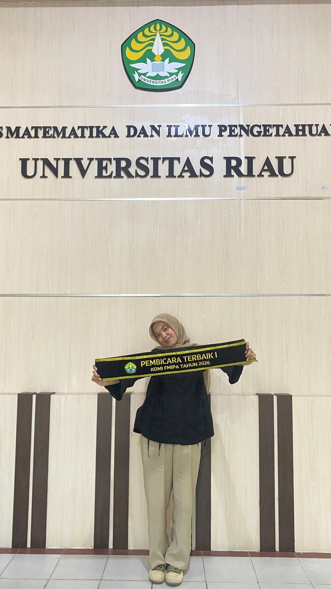
Pembicara Terbaik I KDMI FMIPA 2026
Pencapaian prestatif dalam ajang Kompetisi Debat Mahasiswa Indonesia tingkat fakultas dengan analisis argumentatif tajam.
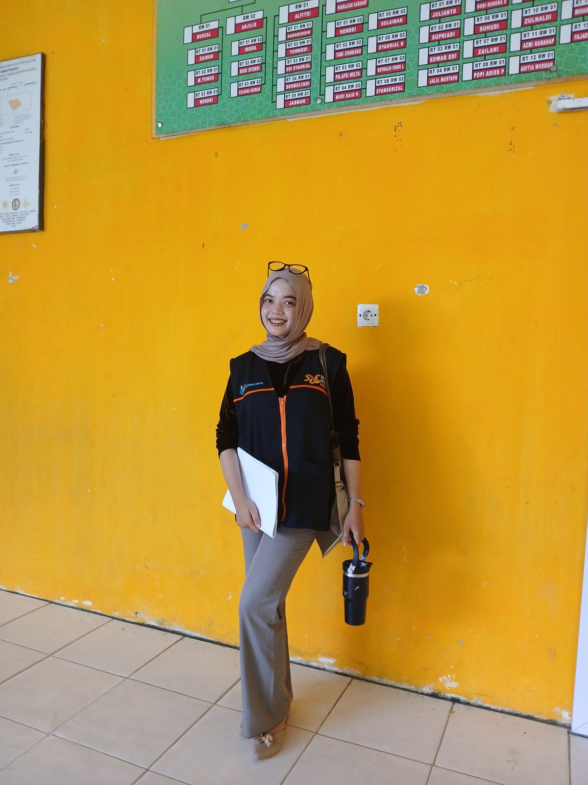
Petugas Pencacah Lapangan BPS 2026
Melaksanakan pendataan Sensus Ekonomi 2026 dan Survei Kesejahteraan Petani dengan validasi data statistik riil.
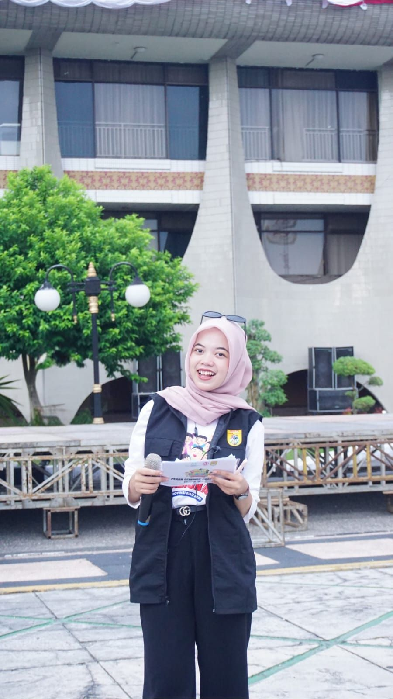
MC Lapangan Pekan Gembira Anak
Memandu jalannya acara besar kepemudaan, menghidupkan antusiasme audiens panggung secara interaktif.
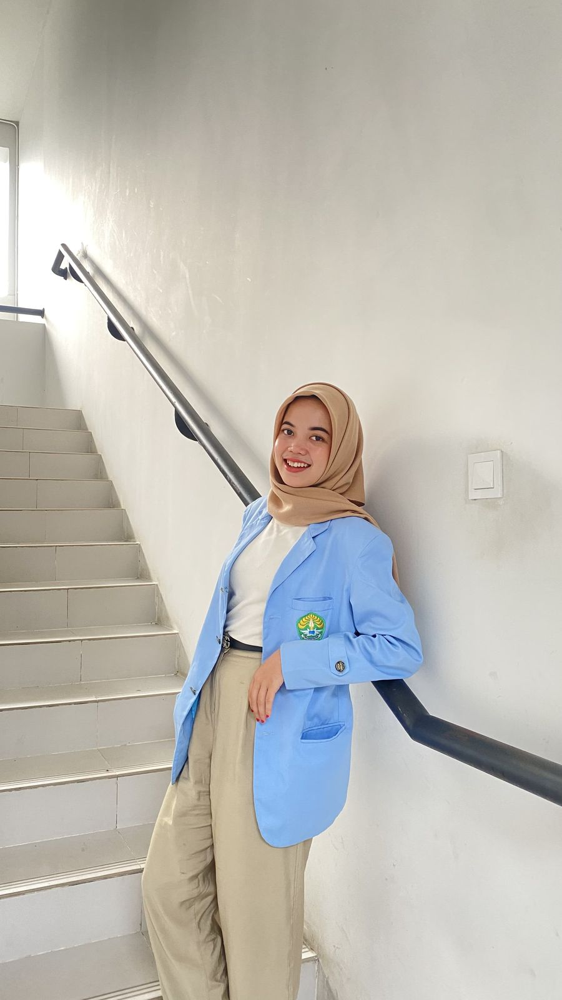
Narasumber & Pemateri TOT Pelatihan
Mengisi sesi materi pada Training of Trainers Fasilitator dan sosialisasi pemenuhan hak anak tingkat provinsi.
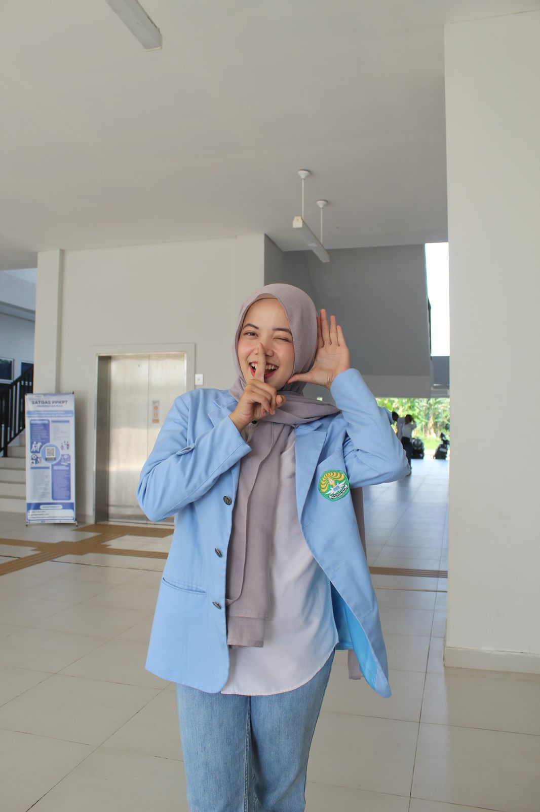
Narasumber PKKMB FMIPA UNRI 2026
Menjadi narasumber inspiratif pengenalan kehidupan kampus bagi mahasiswa baru FMIPA Universitas Riau 2026.
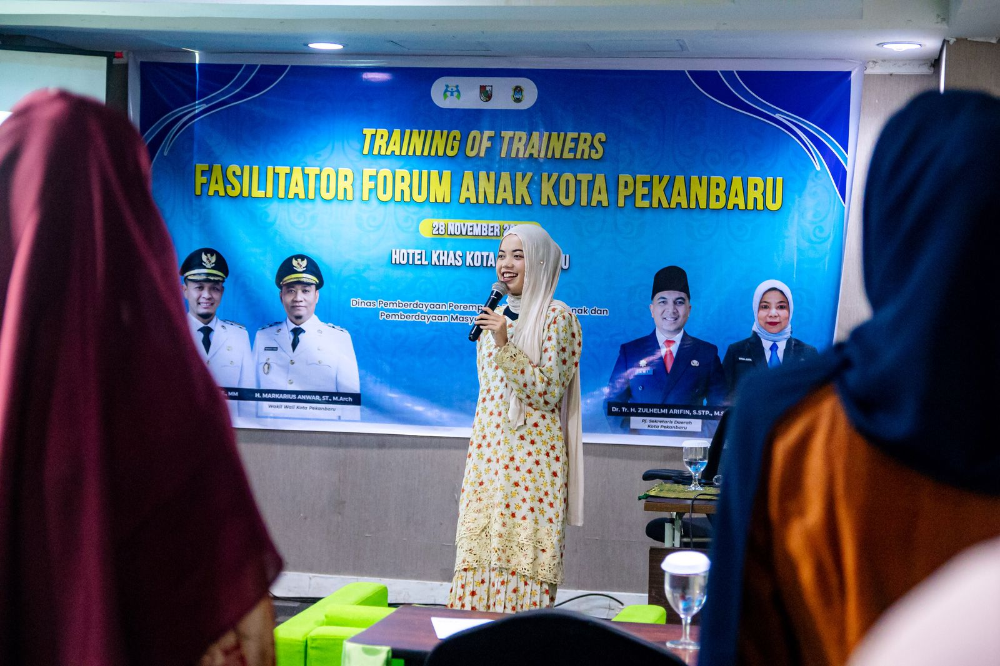
Champion for Peace & Youth Camp
Terpilih sebagai penerima Fully Funded Champion for Peace & peserta Youth Voluntary Camp IYES Foundation 2026.
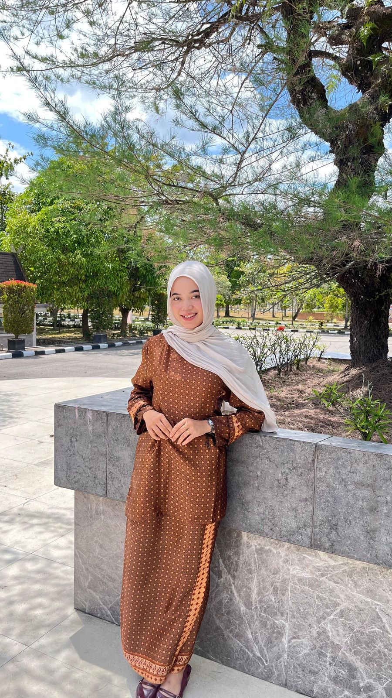
Pelestarian Budaya & Busana Tradisional
Aktif dalam kegiatan apresiasi warisan kebudayaan Melayu dan representasi generasi muda berbusana daerah.
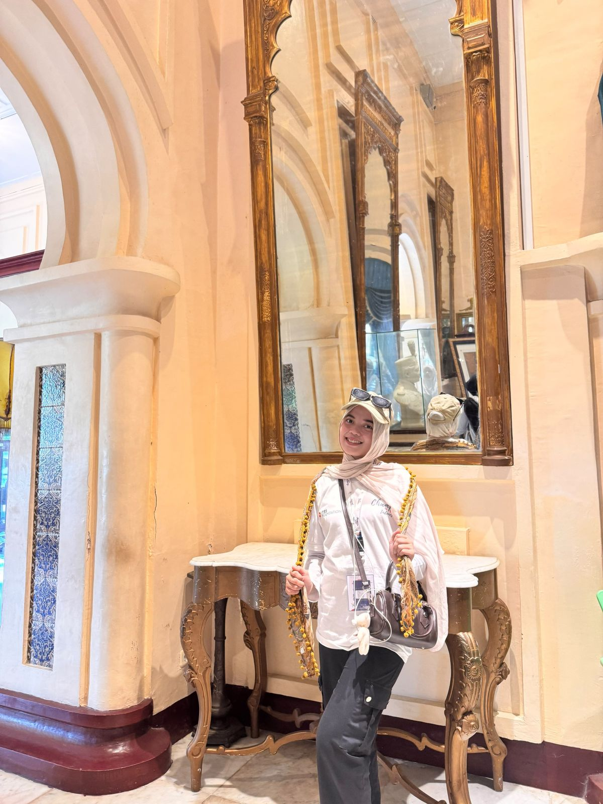
Kegiatan Kebudayaan & Delegasi
Aktif memandu dan menghadiri forum kebudayaan daerah, acara resmi pemerintahan, serta delegasi kepemudaan.
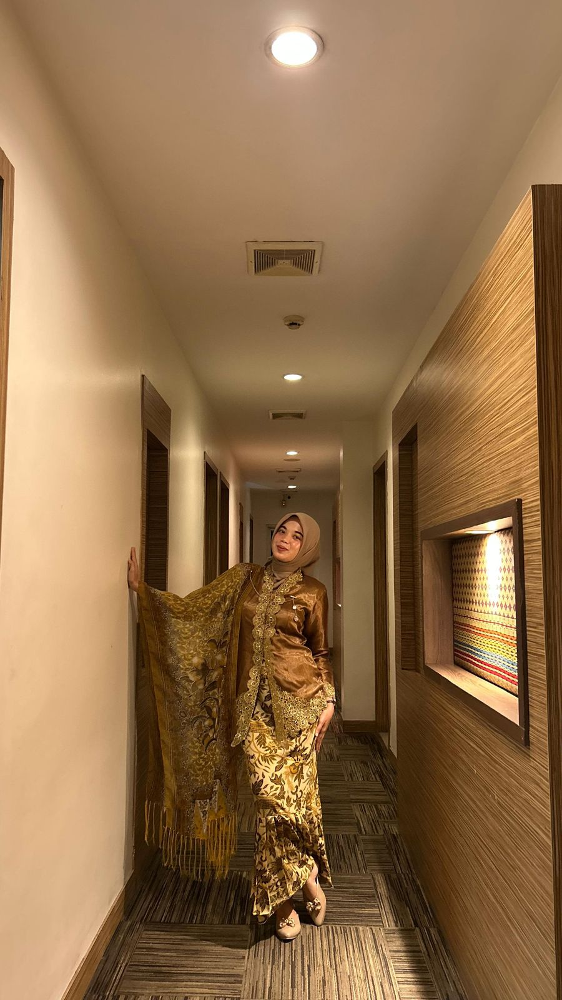
Aktivis Muda & Mahasiswa Prestatif
Mengintegrasikan keilmuan matematika, kreativitas digital, dan pengabdian masyarakat untuk dampak nyata.
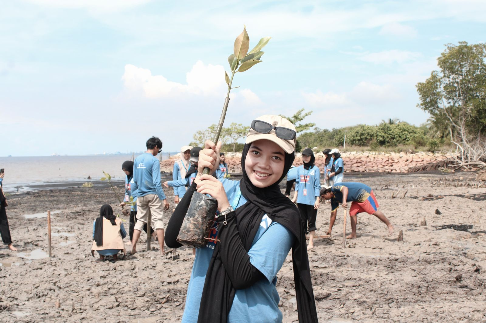
Aksi Sosial Kemasyarakatan & Lingkungan
Terlibat langsung dalam kegiatan penanaman mangrove sebagai bagian dari program pengabdian pemuda IYES Foundation.
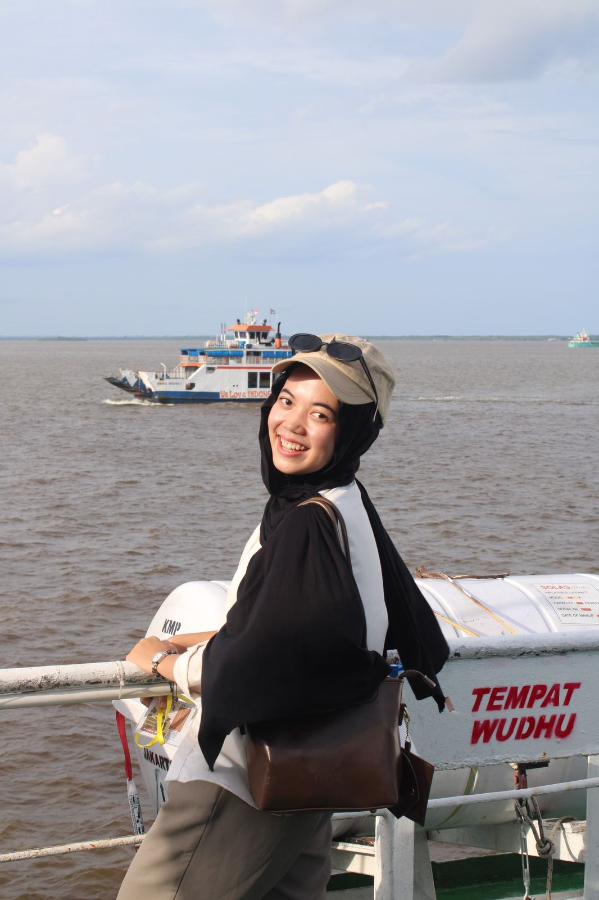
Sesi Kolaborasi Champions for Peace Indonesia
Berpartisipasi aktif dalam sesi diskusi dan kolaborasi program perdamaian pemuda bersama delegasi lintas daerah.
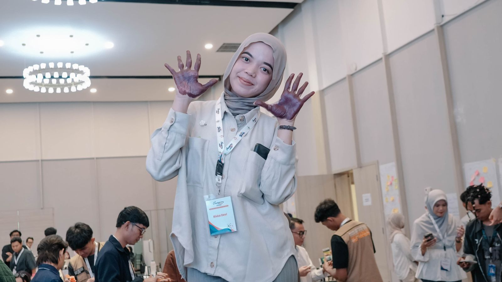
Perjalanan Delegasi Kongres Anak Indonesia
Dokumentasi perjalanan sebagai bagian dari delegasi menuju rangkaian Kongres Anak Indonesia.
Sertifikat & Legalitas Resmi
Sertifikat Pembicara Terbaik I KDMI FMIPA 2026
Kompetisi Debat Mahasiswa Indonesia tingkat Fakultas MIPA Universitas Riau.
Detail Sertifikasi
Best Speaker I Debat 2026
- • Penerbit: Dekanat FMIPA UNRI
- • Kategori: Public Speaking & Logic
- • Penilaian: Critical Thinking & Substansi
Surat Keputusan Petugas Pencacah BPS 2026
Petugas Pencacah Lapangan Sensus Ekonomi & Petugas Survei Kesejahteraan Petani 2026.
Detail Penugasan
Petugas Resmi BPS 2026
- • Instansi: Badan Pusat Statistik
- • Cakupan: Survei Ekonomi & Lapangan
- • Kompetensi: Validasi Data Faktual
Letter of Acceptance Champion for Peace 2026
Penerima pendanaan penuh Youth Voluntary Camp & Champion for Peace IYES Foundation.
Detail Program
Champion for Peace IYES
- • Penyelenggara: IYES Foundation
- • Bentuk: Fully Funded Fellowship
- • Fokus: Perdamaian & Aksi Sosial
Pengalaman Kerja & Organisasi
Badan Pusat Statistik (BPS)
Petugas Pencacah Lapangan Sensus Ekonomi & Survei Kesejahteraan Petani
- Melaksanakan pendataan, pencacahan, dan verifikasi faktual lapangan pada kegiatan Sensus Ekonomi 2026.
- Mengumpulkan data survei kondisi sosial-ekonomi responden secara komprehensif pada Survei Kesejahteraan Petani 2026.
Forum Anak Provinsi Riau
Koordinator Fasilitator / Fasilitator / Staf Divisi Sosialisasi
Koordinator Fasilitator (2025 – 2027)
- Mengkoordinasikan seluruh fasilitator Forum Anak Riau.
- Mendampingi anak dalam memahami dan menyuarakan hak-hak mereka, memberikan dukungan emosional dan psikologis, serta membantu penyelesaian konflik.
- Menjamin lingkungan yang inklusif, bebas dari diskriminasi, intimidasi, dan kekerasan, serta melindungi privasi dan martabat setiap anak yang terlibat.
Fasilitator (2023 – 2025)
- Mendampingi anak dalam memahami dan menyuarakan hak-hak mereka serta memberikan dukungan emosional dan psikologis.
- Membantu menyelesaikan konflik yang timbul dalam kepengurusan Forum Anak Riau.
Staf Divisi Sosialisasi Hak Anak (2021 – 2023)
- Melakukan live Instagram Bincang Asik (BISIK) Forum Anak Riau.
- Melakukan sosialisasi ke sekolah terkait pemenuhan hak dan perlindungan khusus anak.
IHMSI Nasional
Staf Bidang Kajian dan Strategis
- Mencermati isu dan permasalahan dalam skala nasional.
- Bertanggung jawab dalam pelaksanaan Kastalk Pedia.
HIMASKA FMIPA UNRI
Kepala Divisi Advokasi
- Menampung dan menyampaikan aspirasi, keluhan, serta permasalahan mahasiswa Matematika kepada pimpinan fakultas, universitas, dan lembaga terkait.
- Membangun dan mempertahankan hubungan baik dengan dosen, administrasi fakultas, dan organisasi kemahasiswaan demi gerakan advokasi yang sinergis.
- Melaksanakan program kerja podcast Talk with Advokasi (TAKSI), Convergent Study (COS), dan Sekolah Advokasi (SEKAD).
Forum Anak Kabupaten Kampar
Fasilitator / Bendahara
Fasilitator (2023 – Sekarang)
- Mendampingi anak dalam memahami dan menyuarakan hak-hak mereka.
- Memberikan dukungan emosional dan psikologis serta menjamin lingkungan yang inklusif dan bebas dari diskriminasi, intimidasi, dan kekerasan.
Bendahara (2021 – 2023)
- Menyusun dan mengelola anggaran setiap kegiatan bersama sekretaris, ketua, fasilitator, dan pendamping.
- Mencari sumber pendanaan tambahan melalui donasi, sponsor, atau kerja sama dengan lembaga lain.
OSIS SMA Negeri 1 Tambang
Sekretaris
- Bertanggung jawab dalam pengarsipan dan pembuatan surat masuk, surat keluar, dan surat pengunduran diri.
- Bertanggung jawab dalam pembuatan proposal kegiatan HUT sekolah.
Forum Anak Kecamatan Tambang
Sekretaris
- Bertanggung jawab dalam pengarsipan dan pembuatan surat masuk, surat keluar, dan surat pengunduran diri.
- Bertanggung jawab dalam pembuatan laporan kegiatan dan notulensi.
Kegiatan Terbaru (2026) & Program Kepemudaan
Pembicara & Kepanitiaan Kampus
Narasumber PKKMB FMIPA UNRI 2026
2026Menjadi narasumber pengenalan kehidupan kampus bagi mahasiswa baru FMIPA Universitas Riau 2026.
Kongres Anak Indonesia (2025)
Staf AcaraMemandu acara pembukaan & penutupan, menyusun suara anak Dapil I untuk pengajuan calon Duta Anak Indonesia, dan menjadi pimpinan sidang paripurna & komisi 1.
Pekan Gembira Anak Riau (2025)
AcaraMengkoordinasikan teknis acara kepada pendamping & memandu acara di lapangan.
MIPA Expo FMIPA UNRI (2024)
Staf AcaraBertanggung jawab penuh atas bidang lomba essay, pengisi acara, dekorasi panggung utama, dan olimpiade siswa di Kabupaten Siak.
Piala Dekan FMIPA UNRI (2024)
Staf AcaraBertanggung jawab penuh atas cabang minisoccer, menyusun rundown acara & timeline, serta mencari pengisi acara pembukaan dan penutupan.
Pertemuan Forum Anak Riau (2024)
Staf Event ManagementMenyusun rundown & layout acara, membuat gerakan Halo LO dan Halo Pendamping, menjadi time keeper, serta pengisi acara penutupan.
MUBES HIMASKA FMIPA UNRI (2023)
Staf AcaraMenyusun rundown & dekorasi ruangan, serta menjadi pimpinan sidang 1 yang mengkoordinir keseluruhan rangkaian sidang.
Piala Dekan FMIPA UNRI (2023)
Staf AcaraBertanggung jawab penuh atas cabang basket: buku panduan, sosialisasi jurusan, koordinasi peserta & wasit, serta rundown acara.
Pertemuan Forum Anak Riau (2023)
Staf Event ManagementMenyusun rundown & layout acara, membuat flashmob Halo LO dan Halo Pendamping, menjadi time keeper, serta pengisi acara penutupan.
Duta Anak Kampar (2022)
Staf AcaraSosialisasi pendaftaran ke sekolah & media sosial, mengelola grup finalis, menjadi moderator pembekalan, menyusun konsep grand final, dan menjadi pembawa acara.
Duta Anak Kampar (2021)
Staf AcaraSosialisasi pendaftaran ke sekolah & media sosial, mengelola grup finalis, menjadi moderator pembekalan, dan menyusun konsep grand final.
Program Sukarelawan & Prestasi
Volunteer Youth Voluntary Camp
IYES 2026Terlibat aktif dalam aksi sosial kemasyarakatan, advokasi, dan pengabdian pemuda IYES Foundation 2026.
Peserta Fully Funded Champion for Peace
Fully FundedTerpilih sebagai penerima pendanaan penuh (Fully Funded) program perdamaian pemuda Champion for Peace 2026.
Volunteer PKKMB UNRI
2025Memandu acara Pengenalan Kehidupan Kampus bagi Mahasiswa Baru Universitas Riau di Gedung FMIPA.
Volunteer Pendidikan EKSPERIA Vol. II BEM UNRI
2024Edukasi kekerasan seksual terhadap anak di Desa Sungai Bela, membangun pojok baca, edukasi filterisasi air sederhana, dan melatih flashmob anak-anak.
Volunteer UNRI EXPO
2024Memandu sosialisasi beasiswa (Kemahasiswaan UNRI, Djarum, Tanoto Foundation, BSI Scholarship, Pertamina), business talk, talkshow kebudayaan & kepemudaan, dan lomba band.
Volunteer KIPK GTS FORMADIKSI UNRI
2024Sosialisasi kuliah ke sekolah-sekolah di Kecamatan Tambang dan membantu permasalahan pendaftaran kuliah.
Testimoni & Rekomendasi Rekan Kerja
Keahlian & Penguasaan Perangkat
Hard Skills & Teknis
Soft Skills
Software & Tools
Mari Buat Kolaborasi Berdampak
Terbuka untuk undangan sebagai narasumber workshop, moderator kegiatan, riset pencacahan statistik, dan program sosial kepemudaan.
Formulir Undangan & Kolaborasi
Isi formulir berikut untuk langsung terhubung melalui WhatsApp.